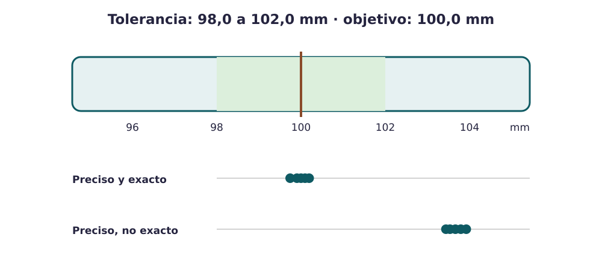
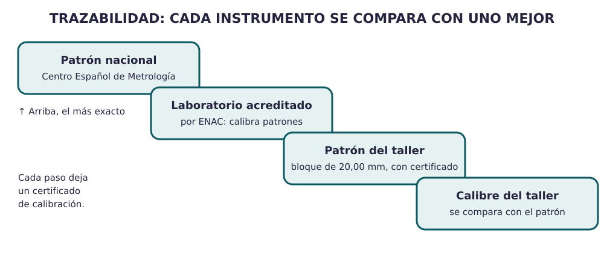

Contenido
Hoy conseguirás: medir con el calibre, decidir con cinco medidas si un lote se acepta y planificar cómo se medirán dos características de vuestro producto.
Medir para decidir
En una fábrica no se mide por curiosidad: se mide para decidir si una pieza vale o no. La metrología es la ciencia de medir bien. Antes de medir en el taller, aprende a usar el instrumento en Leer el calibre.
Cinco palabras con la botella
La rosca de la boca de la botella debe medir 52,00 mm. La empresa acepta las botellas cuya rosca mide entre 51,80 y 52,20 mm: si es más gruesa, el tapón no entra; si es más fina, el tapón queda flojo y pierde agua.
Palabras nuevas
- Valor nominal
- La medida que se busca. 52,00 mm.
- Tolerancia
- Cuánto se acepta que la medida se aparte del nominal. Se da con un mínimo y un máximo. De 51,80 a 52,20 mm: 0,40 mm de ancho.
- Conforme
- Una pieza cuya medida está dentro de la tolerancia. La que se sale es no conforme.
- Resolución
- El cambio más pequeño que puede mostrar el instrumento. El calibre del taller: 0,05 mm. El micrómetro (otro instrumento, para piezas pequeñas): 0,01 mm.
- Exactitud y precisión
- Exactitud: lo cerca que están las medidas del valor de verdad. Precisión: lo cerca que están unas medidas de otras cuando se repiten. Lo contrario de precisión es dispersión.

AmpliarArriba, las medidas están juntas y en el centro: el proceso es preciso y exacto. Abajo, están juntas pero desplazadas: es preciso pero no exacto y fabrica piezas fuera de tolerancia.
Cómo se decide (reglas de esta unidad)
- Conforme: la medida está entre el mínimo y el máximo. Si cae justo en el límite, cuenta como dentro.
- Media = suma de las medidas ÷ número de medidas. Centrado: la media se separa del nominal como mucho 1/8 del ancho de la tolerancia (rosca: 0,40 ÷ 8 = 0,05 mm).
- Rango = medida mayor − medida menor. Dice cuánta dispersión hay: poca si el rango es como mucho la mitad del ancho de la tolerancia; mucha si es más; demasiada si es mayor que el ancho entero.
- Lote: se acepta si todas son conformes y hay poca dispersión; se revisa (se miden todas y se ajusta la máquina) si alguna no es conforme o hay mucha dispersión; se rechaza si 3 o más de 5 no son conformes.
- Instrumento suficiente: su resolución es como mucho 1/4 del ancho de la tolerancia (en la industria se busca 1/10). El calibre de 0,05 mm sirve para tolerancias de 0,20 mm de ancho o más.
Decidir con cinco medidas
Cinco botellas de un lote
Se miden las roscas de cinco botellas: 51,95 · 52,05 · 52,10 · 51,90 · 52,25 mm.
- ¿Cuántas son conformes? Todas menos 52,25 (pasa de 52,20). Son 4 de 5: 4 / 5 × 100 = 80 % de conformes.
- Media: (51,95 + 52,05 + 52,10 + 51,90 + 52,25) / 5 = 260,25 / 5 = 52,05 mm. Se separa 0,05 mm del nominal, justo lo que permite la regla: está centrado.
- Rango: 52,25 − 51,90 = 0,35 mm. La mitad del ancho de la tolerancia es 0,20 mm: hay mucha dispersión.
- Decisión: una botella no es conforme y hay mucha dispersión, así que el lote se revisa: se miden todas sus botellas y se ajusta la máquina de roscar.
Prueba el simulador: mueve el centro y la dispersión y mira cuántas medidas quedan dentro.
Si no aparece, abre el simulador en otra pestaña.
¿Me puedo fiar del instrumento?
Un calibre puede estar desgastado y medir de más o de menos. Por eso:
- Calibrar es comparar lo que marca tu calibre con una pieza patrón cuyo valor se conoce muy bien, y anotar cuánto se equivoca. Si el patrón mide 20,00 mm y tu calibre marca 20,05 mm, mide 0,05 mm de más. Calibrar no es arreglarlo: arreglarlo es ajustar.
- Verificar es comprobar si ese error es aceptable para lo que vas a medir. Para la rosca (tolerancia de 0,40 mm de ancho), un error de 0,05 mm se acepta.
- Trazabilidad de una medida es poder demostrar con papeles que tu calibre se comparó con un patrón, ese patrón con otro mejor… hasta el patrón nacional, que en España custodia el Centro Español de Metrología. El papel que lo demuestra es el certificado de calibración.

AmpliarUn plan de medida, resuelto
Plan de medida de la botella
| Característica 1 | Característica 2 | |
|---|---|---|
| Qué se mide exactamente | Diámetro exterior de la rosca de la boca | Masa de la botella vacía con tapón |
| Valor nominal y tolerancia | 52,00 mm (51,80–52,20 mm) | 340 g (330–350 g) |
| Instrumento, hasta cuánto mide y resolución | Calibre de 150 mm, 0,05 mm | Balanza de 2 kg, 1 g |
| Cómo se mide, paso a paso | Cero comprobado; dos medidas girando la botella un cuarto de vuelta; se anota la mayor | Balanza a cero; botella seca y con su tapón |
| Cuántas piezas y cada cuánto | 1 de cada 50 | 5 de cada lote |
| Qué se hace si no cumple | Se para la máquina de roscar y se revisa el lote desde la última buena | Se revisa el espesor del tubo de ese lote |
| Cómo sabemos que el instrumento es fiable | Calibración anual con certificado; cero cada mañana | Cada semana se comprueba con una pesa patrón de 500 g |
Lo que puede falsear la medida: apretar demasiado el calibre; medir la botella aún caliente del horno.
- En vuestra estación, medid las cinco piezas; cada persona mide al menos una. Anotad las medidas en la ficha de estación (en papel).
- Calculad cuántas son conformes y su porcentaje, la media y el rango, y decidid qué se hace con el lote usando las reglas de arriba. Después copiad la tabla en el apartado 5 del dosier.
- Apartado 5: elegid dos características de vuestro expediente y completad el plan de medida como el de la botella.
Cómo sabéis que está bien
- ☐ Cada medida lleva su unidad y la coma decimal.
- ☐ La resolución del instrumento es como mucho 1/4 del ancho de la tolerancia.
- ☐ Cada lote termina en una decisión: se acepta, se revisa o se rechaza, con su regla.
- ☐ Decís cómo se demuestra que el instrumento es fiable.
Compruébalo
Decide si cada frase es verdadera o falsa. Después usa el simulador para verlo.
00:00: